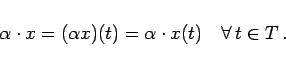

Inhalt Index DeskTop Bronstein

 Funktionalanalysis Vektorräume Lineare und affin-lineare Teilmengen
Funktionalanalysis Vektorräume Lineare und affin-lineare Teilmengen


| (12.13a) |
|  | (12.13b) |
Der auf diese Weise erhaltene Vektorraum wird mit bezeichnet.
Hinweis: Teilräume dieses Vektorraumes sind unter anderen die Räume in den folgenden Beispielen:
| Beispiel B: Vektorraum B(T) |
|
Häufig wird dieser Vektorraum auch mit bezeichnet. Im Falle von erhält man den Raum aus Beispiel D. |
| Beispiel C: Vektorraum C([a,b]) |
|
Menge |
| Beispiel D: Vektorraum C(k)([a,b]) |
|
Sei . Die Menge |
Hinweis: Für die in den Beispielen A bis D bereitgestellten Vektorräume gelten im Falle von T=[a,b] die Teilraumbeziehungen
| (12.14) |
| Beispiel E: Vektorraum C(T) |
|
Für einen beliebig fixierten Punkt bildet die Menge einen linearen Teilraum von . |